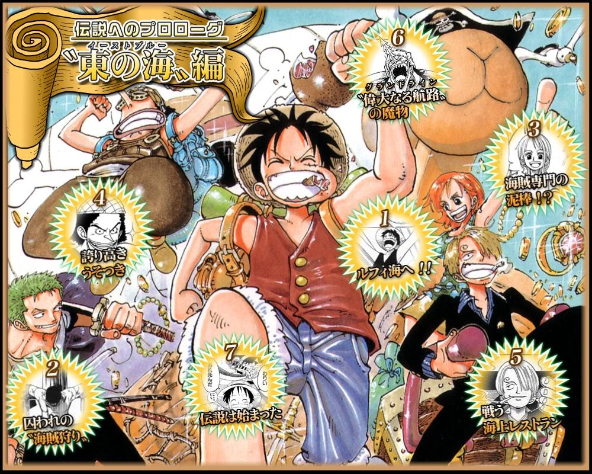
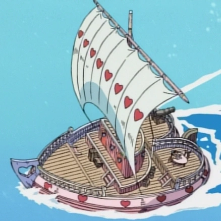
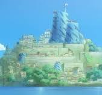
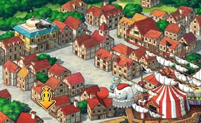
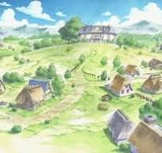
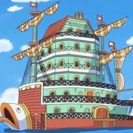
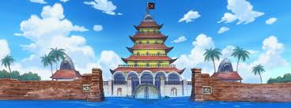
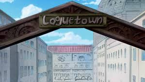

Summary
Monkey D. Luffy sets out to become the Pirate King by becoming the first Pirate to find the legendary treasure. He is determined to find 10 men to accompany him to seek this treasure. He arrives in Shells Town and frees Roronoa Zoro from the Marine's captivity. Travels to Orange Town to face off Captain Buggy alongside the Cat Burglar Nami. Defeats Captain Kuro, saves Syrup Village, recruits his sniper Usopp, and gains his first Pirate Ship, the Going Merry. He then travels for a bite to eat at the famous sea restaurant Baratie, where he gains his ship's cook Sanji and defeats Commodore Don Krieg. Just before entering the Grand Line, he arrives at Loguetown to see the sight of the gallows where Pirate King Gol D. Roger was stabbed to death.

Opening 1 | We Are
By: Hiroshi Kitadani
Locations - Islands - Character Introductions
| Alvida's Ship |

|
Shells Town |

| Orange Town |

|
Syrup Village |

|
Baratie |

|
Arlong Park |

|
Loguetown |

|
|---|